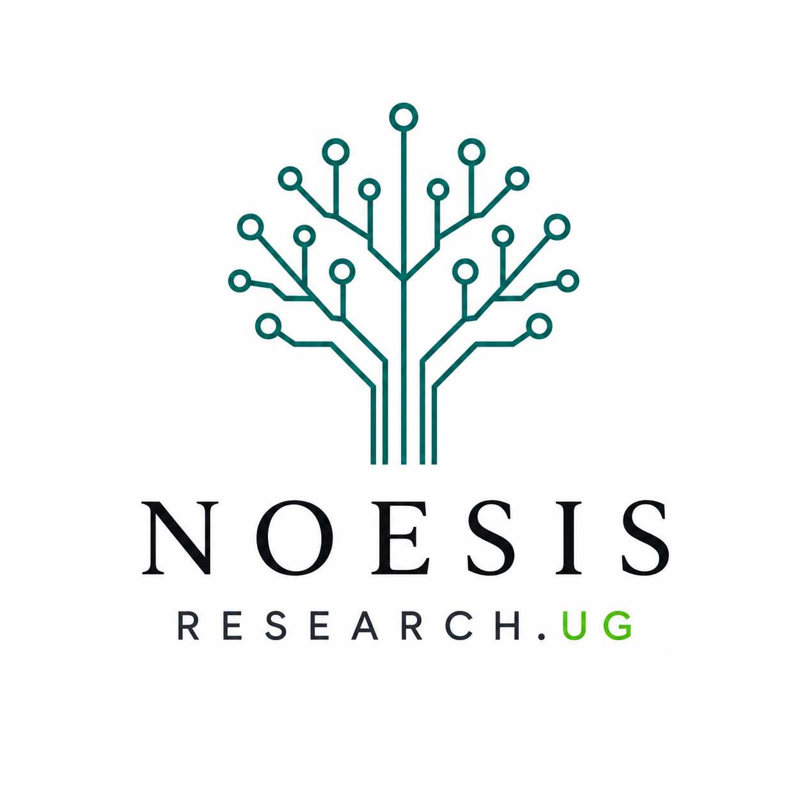
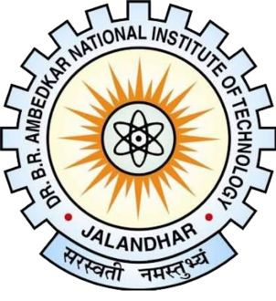
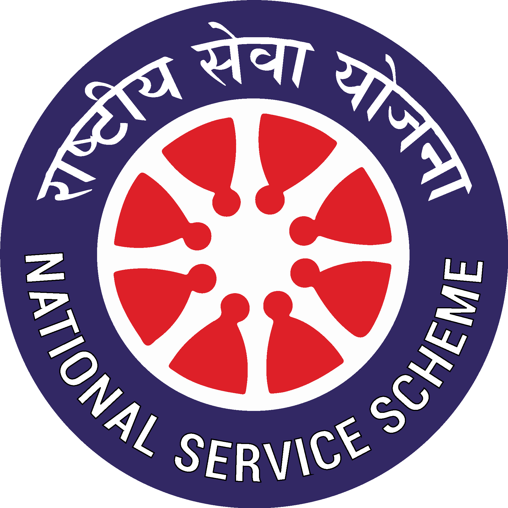

Leadership

CO-FOUNDER · 2026–PRESENT
Noesis Research.UG
Student-led undergraduate research initiative
Co-founded a student-led non-profit initiative with Chinmay Deo to expand access to mentorship and funding for undergraduate research in the electrical sciences.

MENTOR · 2024–2025
D-SAMP
Department Student Academic Mentorship Programme
Mentored a cohort of a dozen first-year students from the Instrumentation and Control Engineering (ICE) department.
Teaching & Academic Volunteering
Optical Measurement Systems: Intensity & Wavelength Modulation
Simulation Laboratory — Lab Manual
Understanding the Loading Effect
Hair Hygrometer
Social Service

COMMUNITY VOLUNTEERING · 2022–2023
National Service Scheme (NSS)
Freshman year
Participated in community volunteering through the National Service Scheme during the first year of undergraduate study.